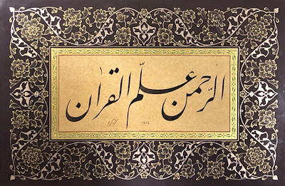

Meşhur Ramazan hadisi "Evveli rahmet..." diye başlar. Ramazan'ın ve Kuran'ın evveli Rahmet'tir, çünkü besmele sadece rahmettir:
İkisi de rahmet ile aynı kökten gelen er-Rahmân ve er-Rahîm, güzel isimlerin en başında sayılır. "Rahmân" ismiyle, Allah kulları arasında ayrım yapmaz, herkese yönelir. Adı aynı ismi taşıyan sure şöyle başlıyor: 
Demek ki Rahmân, kendi nefsine yazdığı rahmetinin gereği olarak Kuran'ı öğretti.Bu isim Allah'ın has ismidir, başkası için asla kullanılmaz. Kitabımızda 18 surede 57 kere geçer ve hepsi "er-Rahmân" şeklinde belirlidir. Belirsiz olarak, "Rahmân" halinde kullanılmaz. İslam öncesi kültürlerde de var olduğunu biliyoruz. "Allah" ismini kullanan Mekke müşrikleri, belki ırkçılık nedeniyle, "Rahmân"ı tanımayı inatla reddettiler.
Diğer ismin tecellisi ise iman gerektiriyor:
33:43 vekâne bilmu-minîne rahîmâ
Yani "Rahîm" ismi ancak ona layık olan müminler için...
Hz Nuh'un dilinde "bismillah" biraz farklı, ama yine "Rahîm" ismiyle bitiyor:
11:41
bismillâhi mecrâhâ vemursâhâ, inne rabbî leġafûrun rahîm
“Haydi, binin artık; yürümesi de, demir atması da Allah'ın adıyla olan bu gemiye! Doğrusu, Rabbim gerçekten bağışlayıcıdır, esirgeyicidir!”
Bu iki rahmet ismi altı ayette yan yana geçiyor:

Dördünde "errahmân, errahîm" i halinde:
41:2 minerrahmânirrahîm
Haşr suresinin sık tekrarlanan son üç ayetinde ise u halinde, çünkü özne:
59:22 huverrahmânurrahîm